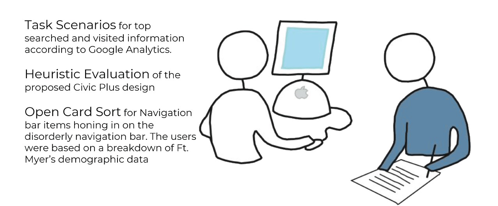
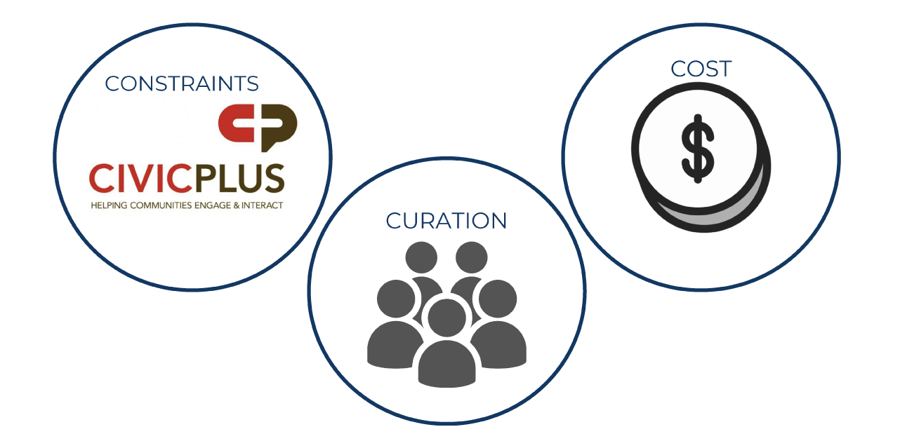
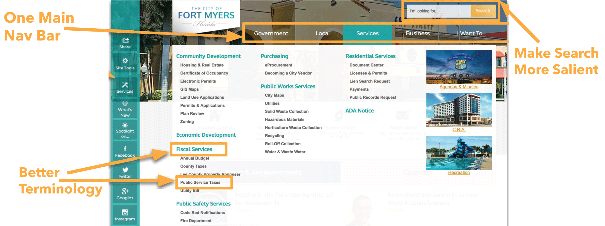

Overview
Infolab is a research group that works with government agencies and cities to improve user interaction through design.
I joined in September 2018 and worked with Ft.Myers in Florida to consult on their web re-design.
Roles
User Researcher
UX Design Consultant
Timeline
September 2018 to December 2018
This project was intended to improve interaction and ease of website usage across all citizen demographics of Ft.Myers.
A government contracted web design company was already half-finished with the design process when we came into the project. We learned quickly after meeting with their representatives that we would not be allowed to focus on the look and feel. So we decided to focus on the information architecture within the navigation bar as well as the search bar salience.
The most immediate action in this project was to study the opinions of citizens about what information was necessary to have on the website. We used three qualitative research methods, Heuristic Evalations, Task Scenarios, and Open Card Sorting. 
Civic Plus weren't allowing any changes in appearance of items on the site, so we decided to go back to basics and aim for something often overlooked and glaringly incorrect with their current design : The Navigation Bar.
We also learned that the cost of changing around the hierarchy of the website and the names of categories would take a lot of expensive developer time that Fort Myers did not have to spend.
We also wanted to Cater to all demographics of users, especially users that were not accessible to us as they were over 1,000 miles away in Florida

We finalized our report so to convey the importance of a user centered re-design approach to their team, so when it’s time for their re-fresh with Civic Plus they’ll be able to present them with data to support the changes they want to make.

We found that the search bar should be bigger. We also found that they should use non-specific terms for locations like ice rink instead of "Skatium". The users of the website were a large majority of tourists and snow birds who only vacation in the winter months so they're not accustomed to local lingo.
Additionally we wanted to suggest having only one navigation bar instead of three which is a confusing architecture for any website.